其処 チェー→ホエゥ· 【其処】
[場所詞] そこ
或処 スエゥー→ホエゥ· 【或処】
[場所詞] どこか
高処 ズエゥー→ホエゥ· 【高処】
[名詞] 高所
酒処 ノウ→ホエゥ· 【酒処】
[名詞] バー、酒場
労処 ナイㇷ゚⤴ホエゥ· 【労処】
[名詞] 職場
草処 コㇳ·ホエゥ· 【草処】
[名詞] 草地
[名詞] マワラ（地名）
皇処 タㇺ⤴ホエゥ· 【皇処】
[名詞] タムホエ、タンケ（セッカイク用語）
筆処 クアー⤴ホエゥ· 【筆処】
[名詞] クワケ（アイル共和国クワケ郡の大都市）
筆処集 クアー⤴ホエゥ·ダㇳ⤴ 【筆処集】
[名詞] クワケ郡（アイル共和国の郡名）
助処 ワイㇷ゚⤴ホエゥ· 【助処】
[名詞] カイッペ（アイル共和国の都市名）
学処王 ヌイ⤴ホエゥ·ヨウ· 【学処王】
[名詞] 校長
皇処之将 タㇺ⤴ホエゥ·ア·ワイ→ 【皇処之将】
[名詞] 他人のために自分を犠牲にする人、良い上司
撃裁処 クㇳ⤴シュー→ホエゥ· 【撃裁処】
[名詞] カジノ、賭博場、遊戯場
茶銭処 ティアー⤴ズー→ホエゥ· 【茶銭処】
[名詞] 茶店
書銭処 アㇰ→ズー→ホエゥ· 【書銭処】
[名詞] 本屋
寝銭処 ホㇰ→ズー→ホエゥ· 【寝銭処】
[名詞] ホテル
開銭処 ナㇺ⤴ズー→ホエゥ· 【開銭処】
[名詞] 市場(いちば)、屋台
口銭処 ヤㇺ→ズー→ホエゥ· 【口銭処】
[名詞] 飲食店、レストラン、食堂
大守処 マー→ヌㇺ→ホエゥ· 【大守処】
[名詞] ヌママ（アイル共和国タウポ郡の大都市）
上学処 ザウ⤴ヌイ⤴ホエゥ· 【上学処】
[名詞] 大学
上学処人 ザウ⤴ヌイ⤴ホエゥ·スㇰ⤴ 【上学処人】
[名詞] 大学生
無抗行処 ムン→マㇰ→モㇰ→ホエゥ· 【無抗行処】
[成句] 向かうところ敵なし
[名詞] セッカイクの役のひとつ
 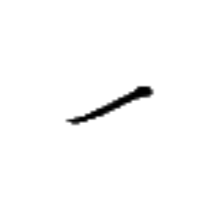
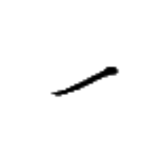
ウン→ 【五】
[連体詞] 5つの
[名詞] 5
[略号] (音楽)基準音の9半音上の音、(移動ドで)ラの音
学処在十五万片於我家 ヌイ⤴ホエゥ·アイㇺ⤴ヌン→ウン→ウェゥー→ツオウ→イェ·パイ⤴ムㇳ⤴
【学処在十五万片於我家】
学校は我が家から15万ツォウ(8.3キロメートル)のところにある。
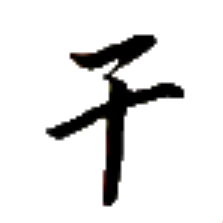
ニー→ 【小】
[状態動詞] 小さい
[連体詞] 小さい
小銭 ニー→ズー→ 【小銭】
[状態動詞] 安価だ、低額だ、安い
小静 ニー→ナー→ 【小静】
[状態動詞] ちまちましている
小島 ニー→ドㇷ゚→ 【小島】
[名詞] 小島（ヴェフィス共和国を構成する島の一つ）
小猫 ニー→ネゥー⤴ 【小猫】
[名詞] ニーンセッカイクのゲームルールのひとつ
大遠小周 マー→トゥアイ⤴ニー→セイ⤴ 【大遠小周】
[成句] 大きな目標とは手の届かないところにあり、小さな目標はすぐ近くにあるため、身の回りの人々やことがらを大切にすることが大事であるということ。
ホアー→ 【挽】
[動詞] 粉にする、挽く、(墨を)磨る
挽時 ホアー→カㇰ· 【挽時】
[名詞] 1日の1000分の1
挽墨 ホアー→フオウ⤴ 【挽墨】
[離合詞] 墨を磨る
[連体詞] 真面目な
甘挽 トゥㇺ→ホアー→ 【甘挽】
[名詞] 砂糖、粉糖
 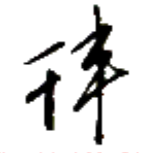
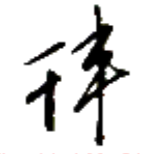
ロㇳ⤴ 【短】
[状態動詞] 短い
我短於汝 パイ⤴ロㇳ⤴イェ·ムアー⤴
【我短於汝】
僕は君よりも背が低い。
長短 アウㇰ⤴ロㇳ⤴ 【長短】
[名詞] 長いものと短いもの
 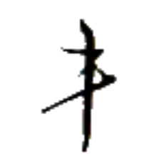
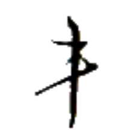
ラー→ 【軸】
[名詞] 棒
[接頭辞] 中核的な、中心的な
[接尾辞] ～の中心、～の中核
[略号] 筆兵集【筆兵集】（アイル共和国総務省）
軸人 ラー→スㇰ⤴ 【軸人】
[名詞] 中心人物、(カードゲームの)親
軸言 ラー→チェㇷ゚→ 【軸言】
[名詞] 第一言語、母語
軸付 ラー→クン⤴ 【軸付】
[名詞] (計算機)インストラクションポインタ、実行中の命令のアドレスを示すレジスタ
軸山 ラー→ツォウ→ 【軸山】
[名詞] ラツォ（アイル共和国の中央に位置する山）
国軸 ズィㇷ゚→ラー→ 【国軸】
[名詞] 首都、国の中心地
値軸 マㇰ⤴ラー→ 【値軸】
[名詞] (セッカイクの)点棒
裁軸 シュー→ラー→ 【裁軸】
[名詞] 意思決定機関、(計算機の)CPU
国論集此冠国之上端裁軸 ズィㇷ゚→ツイ→ダㇳ⤴カー→アイ⤴ズィㇷ゚→ア·ザウ⤴タウ⤴シュー→ラー→
【国論集此冠国之上端裁軸】
国会はアイル共和国の最高意思決定機関である。
獣軸 ザウㇷ゚→ラー→ 【獣軸】
[名詞] (セッカイクの)王
骨軸倉字 ホウ⤴ラー→リー→マン→ 【骨軸倉字】
[名詞] 丸ゴシック調のフォント
冠軸官行 アイ⤴ラー→ユー→モㇰ→ 【冠軸官行】
[名詞] アイル民族中心主義
下筆軸 ウㇳ⤴クアー⤴ラー→ 【下筆軸】
[名詞] 二等事務員（アイル共和国の省庁の筆【筆】において 2 番目に低い階級）
上筆軸 ザウ⤴クアー⤴ラー→ 【上筆軸】
[名詞] 上等事務員（アイル共和国の省庁の筆【筆】において 4 番目に低い階級）
下翰軸 ウㇳ⤴クアイ→ラー→ 【下翰軸】
[名詞] 二等事務監（アイル共和国の省庁の筆【筆】において 7 番目に低い階級）
上翰軸 ザウ⤴クアイ→ラー→ 【上翰軸】
[名詞] 上等事務監（アイル共和国の省庁の筆【筆】において 9 番目に低い階級）
下兵軸 ウㇳ⤴カウㇰ⤴ラー→ 【下兵軸】
[名詞] 二等実働員（アイル共和国の省庁の兵【兵】において 2 番目に低い階級）
上兵軸 ザウ⤴カウㇰ⤴ラー→ 【上兵軸】
[名詞] 上等実働員（アイル共和国の省庁の兵【兵】において 4 番目に低い階級）
下将軸 ウㇳ⤴ワイ→ラー→ 【下将軸】
[名詞] 二等実働監（アイル共和国の省庁の兵【兵】において 7 番目に低い階級）
上将軸 ザウ⤴ワイ→ラー→ 【上将軸】
[名詞] 上等実働監（アイル共和国の省庁の兵【兵】において 9 番目に低い階級）
下翰 ウㇳ⤴クアイ→ 【下翰】
[名詞] 三等事務監（アイル共和国の省庁の筆【筆】において 6 番目に低い階級）
下翰軸 ウㇳ⤴クアイ→ラー→ 【下翰軸】
[名詞] 二等事務監（アイル共和国の省庁の筆【筆】において 7 番目に低い階級）
上翰 ザウ⤴クアイ→ 【上翰】
[名詞] 一等事務監（アイル共和国の省庁の筆【筆】において 8 番目に低い階級）
上翰軸 ザウ⤴クアイ→ラー→ 【上翰軸】
[名詞] 上等事務監（アイル共和国の省庁の筆【筆】において 9 番目に低い階級）
大翰 マー→クアイ→ 【大翰】
[名詞] 事務監長（アイル共和国の省庁の筆【筆】において 10 番目に低い階級）
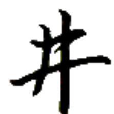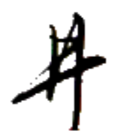
セイ⤴ 【周】
[前置詞] ～の近くに、～の近くで
[状態動詞] ～に近い
我家極周学処 パイ⤴ムㇳ⤴キㇳ·セイ⤴ヌイ⤴ホエゥ·
【我家極周学処】
我が家は学校にとても近い。
周此日 セイ⤴カー→キアー→ 【周此日】
[時間詞] 最近、近頃
周此日果銭上行 セイ⤴カー→キアー→トゥアー→ズー→ザウ⤴モㇰ→
【周此日果銭上行】
最近、果物の値段が上がっている。
周言 セイ⤴チェㇷ゚→ 【周言】
[動詞] 翻訳する
周言人 セイ⤴チェㇷ゚→スㇰ⤴ 【周言人】
[名詞] 翻訳者
周人 セイ⤴スㇰ⤴ 【周人】
[名詞] (カードゲームの)子
巻周 ツェゥー⤴セイ⤴ 【巻周】
[動詞] (その場で)回転する
[名詞] (その場での)回転
星周 ペゥㇳ⤴セイ⤴ 【星周】
[動詞] 1年が経つ
言周 チェㇷ゚→セイ⤴ 【言周】
[動詞＋前置詞] （人を）紹介する
心汝言下周汝 ヒアー→ムアー⤴チェㇷ゚→ウㇳ⤴セイ⤴ムアー⤴
【心汝言下周汝】
自己紹介をお願いします。
言言周 チェㇷ゚→チェㇷ゚→セイ⤴ 【言言周】
[動詞] （人を）紹介する
与我言言周我之男下輩 トゥイ⤴パイ⤴チェㇷ゚→チェㇷ゚→セイ⤴パイ⤴ア·キー→ウㇳ⤴フオㇰ→
【与我言言周我之男下輩】
私の弟を紹介させてください。
行星周 モㇰ→ペゥㇳ⤴セイ⤴ 【行星周】
[離合詞] ～歳である、～という年齢である
彼加我行終同星周 チャㇷ゚⤴アㇳ·パイ⤴モㇰ→タ·バㇷ゚·ペゥㇳ⤴セイ⤴
【彼加我行終同星周】
彼は私と同じ年齢である。
大遠小周 マー→トゥアイ⤴ニー→セイ⤴ 【大遠小周】
[成句] 大きな目標とは手の届かないところにあり、小さな目標はすぐ近くにあるため、身の回りの人々やことがらを大切にすることが大事であるということ。
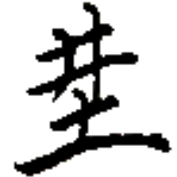
広別 チエー→パウ→ 【広別】
[名詞] 縦横比、アスペクト比
広島 チエー→ドㇷ゚→ 【広島】
[名詞] シュカメニョーイシュケ島（リナエスト・オルス共和国を構成する島の一つ）
広在 チエー→アイㇺ⤴ 【広在】
[状態動詞] 遍在している、至る所にある
御広 アㇺ·チエー→ 【御広】
[動詞] 広報する、広める、広告する
裁将広 シュー→ワイ→チエー→ 【裁将広】
[名詞] シワイツァ（地名）
 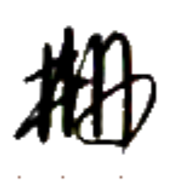
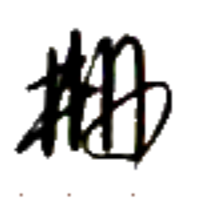
大遠小周 マー→トゥアイ⤴ニー→セイ⤴ 【大遠小周】
[成句] 大きな目標とは手の届かないところにあり、小さな目標はすぐ近くにあるため、身の回りの人々やことがらを大切にすることが大事であるということ。
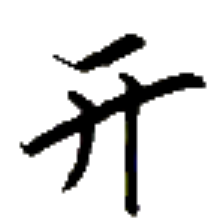 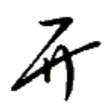
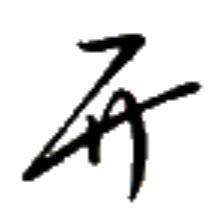
ワイㇷ゚⤴ 【助】【救】
[動詞] 手助けする、手伝う、助ける、救う
[節要求動詞] ～が～するのを手助けする、～が～するのを手伝う
我助彼学牌言 パイ⤴ワイㇷ゚⤴チャㇷ゚⤴ヌイ⤴ペゥㇰ⤴チェㇷ゚→
【我助彼学牌言】
私は彼がパイグ語を学ぶのを手伝う。
助友 ワイㇷ゚⤴ヒー→ 【助友】
[名詞] （セッカイクの役）助友
助処 ワイㇷ゚⤴ホエゥ· 【助処】
[名詞] カイッペ（アイル共和国の都市名）
受助 グㇰ⤴ワイㇷ゚⤴ 【受助】
[動詞] 援助を受ける、支援される
貧銭之国須受助 ヘイ⤴ズー→ア·ズィㇷ゚→リュ·グㇰ⤴ワイㇷ゚⤴
【貧銭之国須受助】
貧しい国には援助が必要だ。
ビアー→ 【民】
[名詞] 人々、民衆、民
[略号] 筆民集【筆民集】（アイル共和国民部省）
官民 ユー→ビアー→ 【官民】
[名詞] 役人と民衆、政府と民衆
[名詞] あらゆる社会階層の人々
官民迷 ユー→ビアー→バウ⤴ 【官民迷】
[主語＋動詞] 統一の規範が無く、何を採用すべきか役人も民衆も戸惑っている様子。
何か規則や規範などの統一化を図るときに、毎回のように登場する決まり文句。
筆民集 クアー⤴ビアー→ダㇳ⤴ 【筆民集】
[名詞] （アイル共和国の）民部省
豊民島 ホウ→ビアー→ドㇷ゚→ 【豊民島】
[名詞] フロン・ビェーイシュ島（リナエスト・オルス共和国を構成する島の一つ）
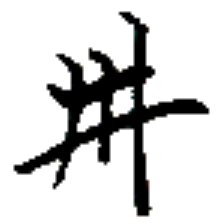
網別 トゥㇰ⤴パウ→ 【網別】
[動詞] 濾し分ける
網律 トゥㇰ⤴ヤㇰ→ 【網律】
[名詞] 国家の役割の規定と市民の権利の規定が同一文書に入るような憲法
網墨 トゥㇰ⤴フオウ⤴ 【網墨】
[名詞] ビットマップ
網墨倉字 トゥㇰ⤴フオウ⤴リー→マン→ 【網墨倉字】
[名詞] ビットマップフォント
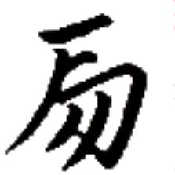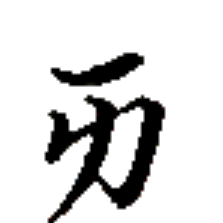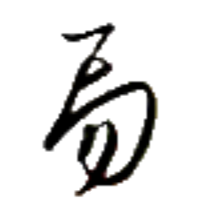
マウン→ 【馬】【瑪】
[名詞] 馬、(セッカイクの)馬
馬虎之別 マウン→ダウ⤴ア·パウ→ 【馬虎之別】
[名詞] 知る人ぞ知る、分かる人には分かる
燐字を知っている者は 馬【馬】と 虎【虎】の字を容易に区別できることから、慣れていれば区別ができるが、不慣れな者には区別が難しいようなことを表す。
馬弓兵 マウン→グアー⤴カウㇰ⤴ 【馬弓兵】
[名詞] (特にヴェフィスの)騎馬兵、(セッカイクの役)馬弓兵
車馬 カウン→マウン→ 【車馬】
[名詞] クティヤ（行政区画名）
車馬集 カウン→マウン→ダㇳ⤴ 【車馬集】
[名詞] クティヤ郡（アイル共和国の郡名）
 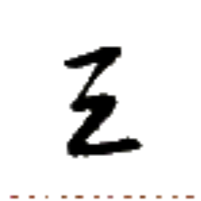
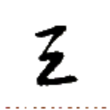
ギュー→ 【層】
[名詞] 層、(建物の)階
[助数詞] ～階
[接頭辞] 重なった
[動詞] (掛け算を唱えるときの)掛ける
我囲在於四層 パイ⤴ピアー⤴アイㇺ⤴イェ·アㇷ゚→ギュー→
【我囲在於四層】
私の部屋は4階にある。
二層三此六 イㇰ⤴ギュー→オㇺ⤴カー→ネゥㇳ⤴
【二層三此六】
2×3=6
層積 ギュー→ショㇺ→ 【層積】
[動詞] (ブロックなどを)積み重ねる
層付 ギュー→クン⤴ 【層付】
[動詞] (紙などを)重ねる、重ね合わせる
層術 ギュー→ズィㇳ→ 【層術】
[名詞] 掛け算
 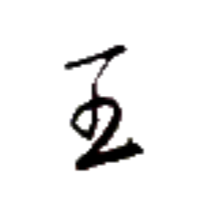
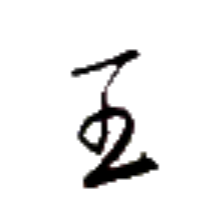
棚絵 ヒュー⤴レゥㇰ→ 【棚絵】
[名詞] 表(ひょう)、テーブル
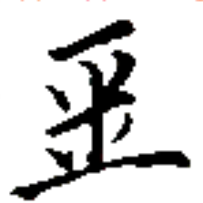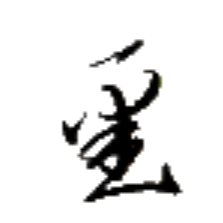
クオㇳ→ 【豆】
[名詞] (さやに実る)豆
コーヒーなどは 種【種】。
地豊豆 ホエゥㇷ゚⤴ホウ→クオㇳ→ 【地豊豆】
[名詞] 落花生、ピーナッツ
豆覆 クオㇳ→コウ→ 【豆覆】
[名詞] コッコ（地名）
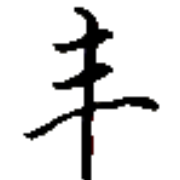
ヨウ→ 【直】
[名詞] 定規
[名詞] 規則、規範
[状態動詞] 真っすぐだ、まともだ
直豊 ヨウ→ホウ→ 【直豊】
[人名] ヨコ（人名）
値直 マㇰ⤴ヨウ→ 【値直】
[名詞] (セッカイクの)得点板、点尺
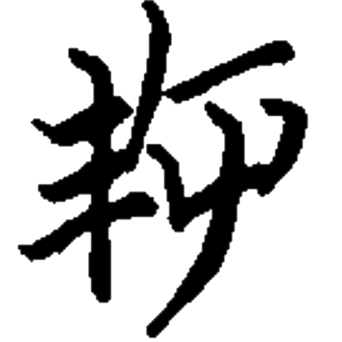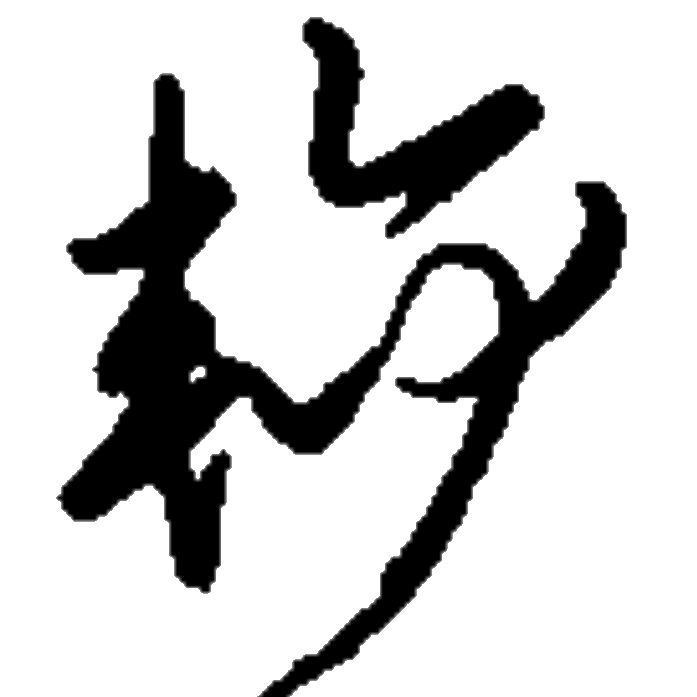
クアイ→ 【謝】
[動詞] 謝る、謝罪する、詫びる
謝石 クアイ→ズィュー⤴ 【謝石】
[状態動詞] 慇懃だ、高貴だが威張らない
清王謝石 リン·ヨウ·クアイ→ズィュー⤴ 【清王謝石】
[成句] （リン王が、石につまづいて転んだ際に、自分の身を気にかけるのでなく自身が蹴った石に謝罪したという逸話から）高貴だが威張らない様子。
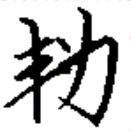
正清 ティㇳ→リン· 【正清】
[状態動詞] 整っている、きちんとしている


 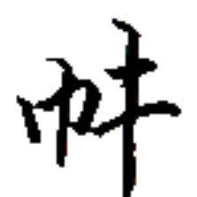
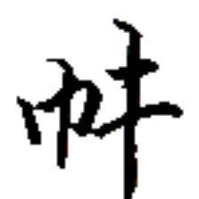